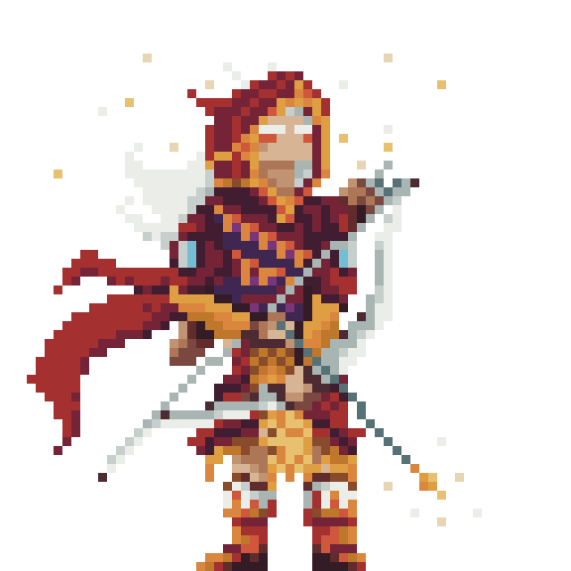

About
Known in Visayan folklore as raiders and hunters, Mangangayaw were feared for their unmatched skill with bows, spears, and ranged weapons. Swift and precise, they strike from a distance, often unseen until it’s too late. They embody the strategy of hit-and-run tactics, wearing down foes before they can close in. In gameplay, the Mangangayaw specializes in long-ranged attacks, delivering consistent damage while avoiding direct confrontation.
Skill Cards (Moveset)
- Quick Shot – Deals 150 (+ 150% ATK), 100% hit, CD 1
- Piercing Arrow – Deals 225% ATK, ignores defense, 80% hit, CD 3
- Volley – Deals 50 (+100% ATK) each to all enemies, 80% hit, CD 1
- Focus Aim – Next 2 attacks +30% hit chance and attacks ignore 20% of enemy DEF, CD 4
- Explosive Arrow – Deals 300 (+ 500% ATK), 50% hit, 30% chance to commit Overexplosion: Deal 10% of damage dealt to all allies, CD 3
Role Presets (Ranged)
| Preset | HP | ATK | DEF | Description |
|---|---|---|---|---|
| Sniper | 600 | 110 | 50 | Very high damage, low defense, medium HP |
| Ranger | 700 | 90 | 100 | Medium damage, medium defense, high HP |
| Hunter | 750 | 100 | 80 | Low damage, medium defense, medium HP |
